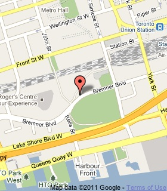

CN Tower
The CN Tower is a 553.3 m-high concrete communications and observation tower located in Downtown Toronto, Ontario, Canada. Built on the former Railway Lands, it was completed in 1976. Its name "CN" originally referred to Canadian National, the railway company that built the tower.

5/5
Food and service were excellent. We were moved through the whole lunch reasonably briskly, which I understand given the volume of people wanting to do the lunch. The food was very good, we were all pleasantly surprised by the quality. All of our meals were the correct temperature and were very well presented. It's for the views though that most people come, and today they were superb, absolutely mesmerizing. The whole meal for 3 people with 5 drinks and gratuities was $300,which we thought was good value considering the entrance fee on it's own. One of our best memories of Toronto
5/5
the CN tower to go to the 360 restaurant. It was a quick ride up the elevator to the restaurant which boasts revolving views of the city and a pricey/good steak. After dinner we were able to see picturesque views of the city from the viewing platforms and through the famous glass floors. Fun fact: the glass floors were created to withstand the weight of 14 hippos. The CN tower is a great place to take tourists, celebrate an occasion, or simply just to enjoy unreal views of the city. Definitely worth the trip to check out the views.
5/5
Always great for a visit when in Toronto. Do go up on a sunny day when you can see everything around you. Do take the opportunity to see the glass floor and to take lots of pictures. It is especially cool to be able to see into the Rogers Centre when the roof is open.